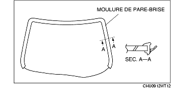
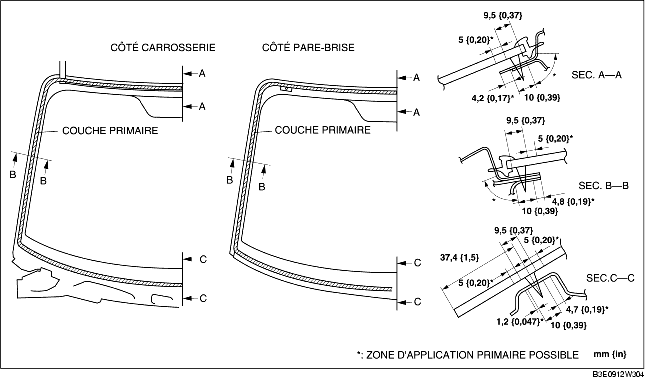

REPOSE DE PARE-BRISE
B3E091263900W02
-
Avertissement
-
• L'usage d'une lame de rasoir à mains nues peut provoquer des blessures. Veiller à toujours porter des gants lors de l'utilisation d'une lame de rasoir.
-
Attention
-
• Une repose correcte du pare-brise peut être difficile si le produit d'étanchéité est craquelé, ou si la vitre est déformée par la pression de l'air lorsqu'une portière est fermée/ouverte, alors que les vitres demeurent fermées. Laisser ouvertes toutes les vitres jusqu'à ce que le pare-brise soit complètement reposé.
1. Découper l'ancien enduit d'étanchéité à l'aide d'une lame de rasoir en veillant à laisser une épaisseur de 1-2 mm {0,04-0,07 in} sur tout le pourtour du cadre.
2. Si, à certains endroits, la totalité du produit d'étanchéité a été enlevée, appliquer une couche d'apprêt après avoir dégraissé la surface à enduire, et laisser sécher pendant environ 30 minutes. Puis appliquer une couche de produit d'étanchéité de 2 mm {0,08 in} d'épaisseur.
3. Nettoyer et dégraisser une bande d'environ 50 mm {1,97 in} de largeur sur tout le pourtour du pare-brise et de la surface d'adhérence de la carrosserie.
4. En cas de réutilisation d'un pare-brise, effectuer la procédure suivante :
-
(1) Fixer les goupilles dans leurs positions de siège, marquées d'un repère lors de la dépose.
-
(2) Reposer la moulure pare-brise.

5. N'utiliser qu'une couche d'apprêt pour verre sur les surfaces en verre, et une couche d'apprêt pour carrosserie sur les surfaces de la carrosserie et de la moulure, puis laisser sécher pendant approx. 30 minutes.
-
Attention
-
• Maintenir la surface propre de toute trace de saleté ou graisse, et ne pas toucher la surface. Sans quoi, la couche d'apprêt ne fera pas jonction correctement au niveau de la surface en verre et de la surface de carrosserie, provoquant des fuites.

6. Appliquer du produit d'étanchéité sur la surface de la vitre, comme indiqué dans l'illustration.
7. Insérer les goupilles de positionnement sur la carrosserie, puis reposer le pare-brise.
8. Appuyer sur le pare-brise afin d'enclencher les languettes dans la carrosserie.
9. Exercer une pression tout autour de la vitre, de telle sorte que la mesure d'écartement de la lèvre de moulure corresponde aux spécifications.
10. Reposer les pièces suivantes :
-
(1) Lampe de lecture (voir la section DÉPOSE/REPOSE DE LAMPE DE LECTURE.)
-
(2) Garniture de montant A (voir la section DÉPOSE/REPOSE DE GARNITURE DE MONTANT A.)
-
(3) Pare-soleil (voir la section DÉPOSE/REPOSE DE PARE-SOLEIL.)
-
(4) Capteur de pluie (véhicules équipés d'un système d'essuie-glace automatique) (voir la section DEPOSE/REPOSE DE CAPTEUR DE PLUIE.)
-
(5) Rétroviseur intérieur (voir la section DEPOSE/REPOSE DE RETROVISEUR INTERIEUR.)
-
(6) Grille d'auvent (voir la section DÉPOSE/REPOSE DE GRILLE D'AUVENT.)
-
(7) Bras et balai d'essuie-glace (voir la section DEPOSE/REPOSE DE BRAS ET DE BALAI D'ESSUIE-GLACE AVANT.)
11. Laisser le produit d'étanchéité sécher complètement.
-
Temps de séchage du produit d'étanchéité : 24 h